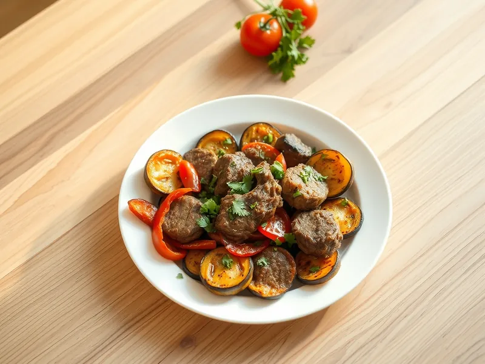

Садж из баранины с овощами на сковороде
Обжаренная баранина с баклажаном, перцем и помидорами по-азербайджански
30 мин3 порц.530 ккал на порциюБ 27 · Ж 41 · У 13Кавказская кухня
Открыть в приложении: порции, таймеры, список покупок
Продукты на 3 порц.
- Баранина450 г
- Баклажан1 шт
- Перец болгарский1 шт
- Помидоры2 шт
- Лук репчатый1 шт
- Растительное масло3 ст. л.
- Соль1 ч. л.
- Перец чёрный молотый0,5 ч. л.
- Кинза по желанию0,3 пучка
Как готовить
- Нарежьте баранину тонкими кусочками 3×3 см, посолите и поперчите. Баклажан нарежьте кружками 1 см, перец крупными полосками, помидоры дольками, лук кольцами.
- Обжарьте баклажаны в половине масла на среднем огне по 2 минуты с каждой стороны до мягкости и румяного цвета, посолите, выложите в тарелку.
- В той же сковороде обжарьте перец и помидоры 3 минуты до подпалин, выложите к баклажанам.
- Добавьте оставшееся масло, разогрейте на сильном огне и жарьте баранину 7-8 минут, помешивая, до коричневой корочки. Добавьте лук и жарьте ещё 3 минуты.
- Выложите овощи обратно поверх мяса, накройте крышкой и прогрейте на слабом огне 3 минуты, чтобы мясо пропиталось соком. Посыпьте кинзой.
Совет. Для саджа берите мякоть задней ноги или корейку: жёсткая лопатка за 10 минут жарки не успеет стать мягкой.